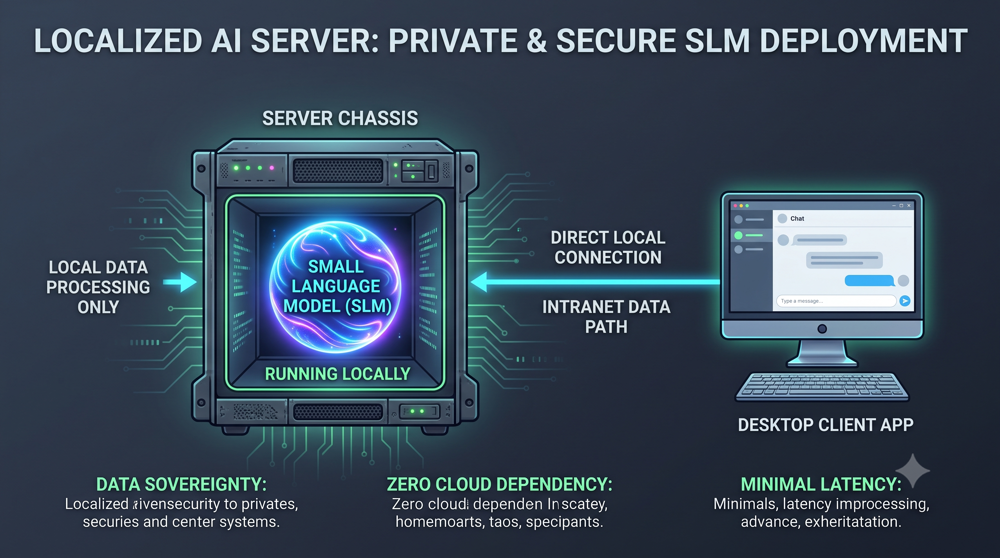

Série: Do Silício ao Chão de Fábrica — Episódio 05
A Rota de Fuga: SLMs e Edge AI

Tempo de leitura: 5 minutos
Se a ditadura do silício e o aprisionamento tecnológico na nuvem são riscos corporativos letais para o controle estratégico das empresas, a engenharia séria foi obrigada a reagir. A fuga desse latifúndio digital não é apenas desejável; é um requisito de sobrevivência básica. E ela está acontecendo através de duas frentes: os modelos de linguagem pequenos (SLMs) e a computação distribuída de borda (Edge Computing).
Durante muito tempo, o mercado acreditou na mentira conveniente de que a única forma de rodar inteligência artificial seria utilizando grandes modelos generativos hospedados nas nuvens de provedores centralizados. No entanto, usar um super-modelo milionário de trilhões de parâmetros para classificar uma rota logística ou ler um arquivo de nota fiscal é como usar um canhão para matar um mosquito. Custa caro, expõe dados sigilosos a terceiros e exige uma conexão constante à rede.
A reação da indústria é a ascensão dos SLMs (Small Language Models). São modelos otimizados, treinados para tarefas específicas e com apenas alguns bilhões de parâmetros. Eles são leves o suficiente para serem baixados e executados localmente (on-premise). Um modelo local de código aberto, calibrado com os dados históricos da empresa, é capaz de entregar um resultado muito mais preciso e seguro do que um modelo geral de nuvem, rodando em servidores locais comuns ou em computação de borda.
Essa descentralização é alimentada pelo avanço do hardware ARM e, a longo prazo, pela consolidação do RISC-V — uma arquitetura de processadores de código aberto e livre de patentes. Ao mover a inteligência da nuvem para as pontas (dentro de roteadores, antenas locais ou dispositivos industriais nas filiais), as empresas recuperam a soberania operacional. O processamento torna-se imune às oscilações da internet e à variação de preços de provedores centralizados. O futuro da engenharia de software reside na distribuição da inteligência local, de forma enxuta e com requinte arquitetural.
A Solução de Engenharia: A Pilha de IA Local
Para implementar IA local sem depender de conexões externas e manter a privacidade absoluta dos dados, a pilha tecnológica moderna utiliza containers leves. Rodando o Ollama via Docker para gerenciar e executar modelos menores altamente otimizados (quantizados), a aplicação escrita em Java usa o Spring AI para se conectar localmente a essa engine por meio de APIs locais rápidas, eliminando qualquer dependência da nuvem.

Esquema da pilha tecnológica local usando Ollama e Spring AI.
A Lente do Negócio: Inteligência Sem Vazamento de Dados e Custos Imprevisíveis
Para o empresário ou gestor não técnico, o modelo clássico de IA (enviar dados de clientes para servidores de Big Techs nos EUA) traz dois riscos graves: insegurança de dados e contas de nuvem imprevisíveis indexadas ao dólar. Ao adotar modelos locais pequenos (SLMs) rodando dentro de servidores da própria empresa, você adquire uma capacidade de inteligência artificial totalmente privada e sob seu controle. Seus dados sigilosos e de seus clientes nunca saem do seu ambiente seguro e o seu custo operacional torna-se fixo e previsível, permitindo que pequenas e médias empresas inovem sem comprometer suas margens financeiras.
A verdadeira inovação é soberana e offline-first. Depender do cabo de rede de terceiros para rodar a lógica básica do seu negócio é delegar a sua sobrevivência.
Sua arquitetura de dados opera com independência física local ou silencia no primeiro sinal de queda de conexão externa?
Lousa de Conceitos e Dicionário de Termos
- Docker: Plataforma de código aberto que automatiza a implantação, empacotamento e execução de aplicações dentro de containers de software isolados, garantindo consistência operacional de ambiente.
- Edge Computing (Computação de Borda): Paradigma de computação distribuída que processa dados próximo à sua fonte física de geração de dados, reduzindo latência e uso de banda de rede.
- Ollama: Motor open-source leve projetado para empacotar e executar localmente (on-premise) modelos de linguagem pequenos com aceleração de hardware.
- RISC-V: Arquitetura de conjunto de instruções (ISA) aberta e gratuita baseada em princípios de computadores com conjunto de instruções reduzido (RISC).
- Small Language Models (SLM): Modelos de linguagem compactos, especializados e com poucos parâmetros, projetados para tarefas específicas com alta eficiência energética.
- Spring AI: Módulo java projetado para simplificar e abstrair a integração de lógica de Inteligência Artificial local ou remota em aplicações tradicionais.
— Fim do Episódio 5. Retorne ao Episódio 4 ou continue no Episódio 6: A Elite Rentista vs. A Cultura da Engenharia. Índice da série em: Chamada e Índice.
Nota do Autor: Quinto episódio da série "Do Silício ao Chão de Fábrica", detalhando a distribuição local da inteligência artificial e a independência da infraestrutura de rede.